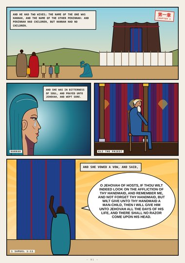
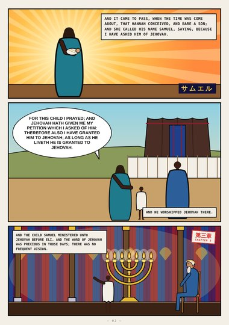
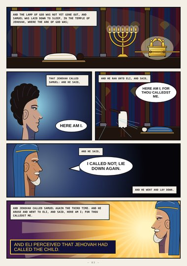
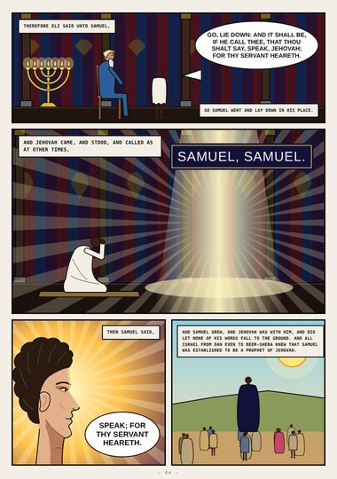
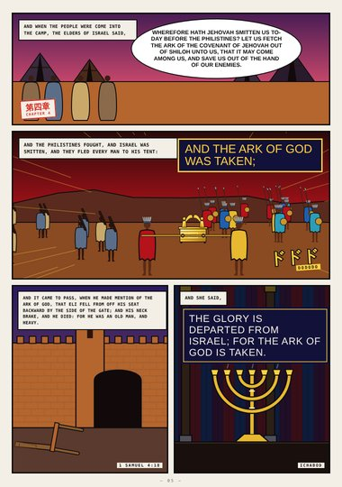
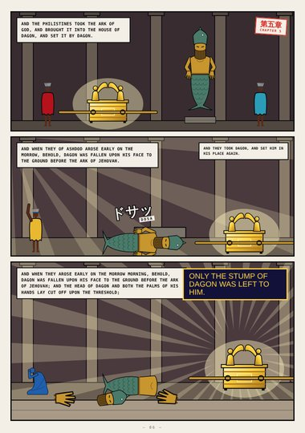
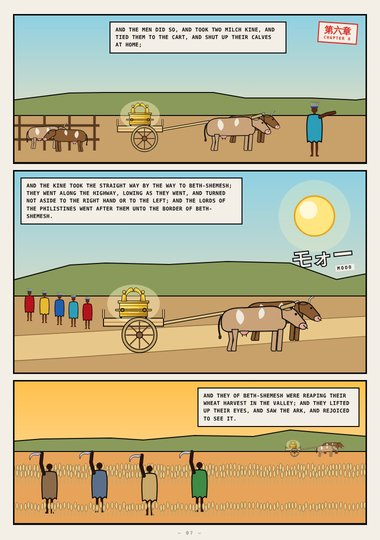
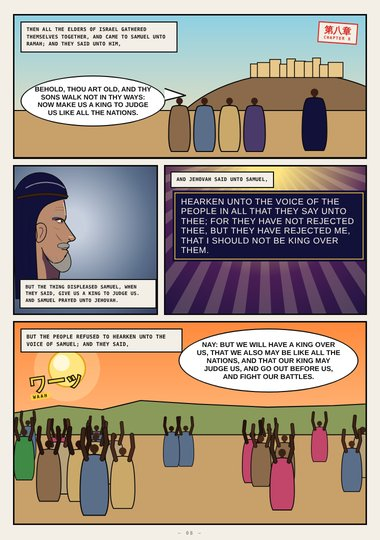
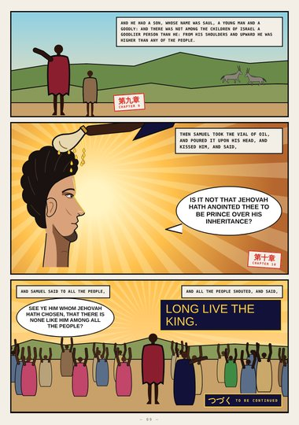

1 Samuel (digest) · Book One · 1 Samuel 1–10
Thy Servant Heareth
Hannah's vow at Shiloh, the child given to Jehovah, the voice in the night and "Speak; for thy servant heareth," the ark taken and Dagon fallen on his face, the kine that carried it home, and Saul anointed king.
Digest edition: an early, abridged first draft (highlights only). The full edition is replacing it.
Start reading ›Pages
 CoverCover1 Samuel 1–10
CoverCover1 Samuel 1–10
Page 1Hannah1 Samuel 1:2–11
Page 2Asked of Jehovah1 Samuel 1:20 – 3:1
Page 3Here Am I1 Samuel 3:3–8
Page 4Speak1 Samuel 3:9–20
Page 5The Ark of God Was Taken1 Samuel 4:3–22
Page 6Dagon1 Samuel 5:2–4
Page 7The Kine1 Samuel 6:10–13
Page 8Give Us a King1 Samuel 8:4–20
Page 9Long Live the King1 Samuel 9:2 – 10:24